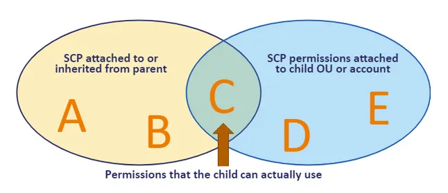
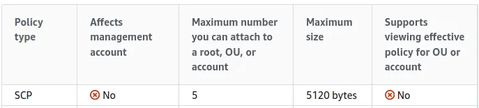
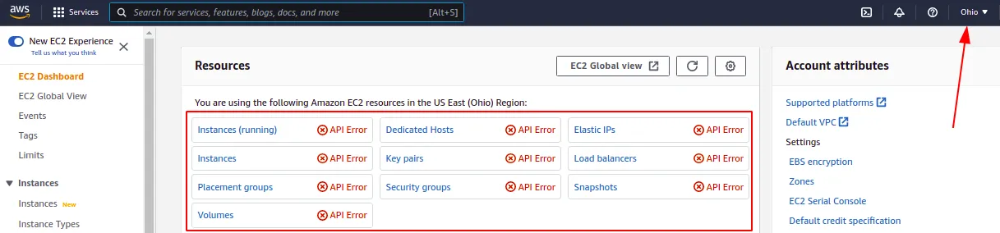
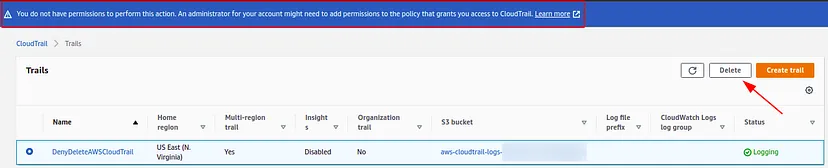
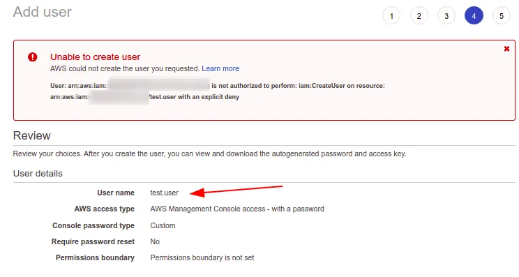

AWS Service Control Policies (SCPs)
What are SCPs?
Basically, service control policies are used as guardrails or to set limits over a central location (AWS Organization). You can use SCPs to define the maximum permission allowed to accounts belonging to your organization.
Where do we apply them?
SCPs can be attached to the following objects in your organization structure:
- Root level;
- OU (Organization Unit) level;
- Account level;
Reminder:
There is inheritance when using SCPs. The lower levels receive rules defined in the higher levels.
Tip:
Do not apply SCPs directly on the Root level before knowing the actual effects of your policy. Instead, create an Organization Unit for testing purposes and move one or more accounts to there in order to test your policy effectiveness.
IMPORTANT TO KNOW:
- SCPs affect only IAM users and roles that are managed by accounts that are part of the organization.
- SCPs affect only member accounts in the organization. They do not affect users or roles in the management account.
- Users and roles must still be granted permissions with appropriate IAM permission policies.
- SCPs affect all users and roles in attached accounts, including the root user.
- SCPs do not affect any service-linked role.[2]
There are two types of strategies that can be used when it comes to SCPs deployment:
- Deny list: This approach takes advantage of the default policy “FullAWSAccess” since it is attached to every account and combined with at least one additional policy that you create, which will explicitly deny access to the services that you indicate on it.
- Allow list: Different from the deny list technique above, this method consists in removing the default policy “FullAWSAccess” and explicitly allowing the services that you want, otherwise, they will be denied implicitly.
Characteristics and Quotas:
aws_scp_deny_list_sample
Note.: Be careful!! DO NOT apply this sample above in your production environment instead create an environment where you can test all your needs.
Results:


Conclusion:
Services Control Policies (SCPs) are extremely powerful and helpful in defining guardrails and setting limits to accounts that belong to an organization.
Sources:
- https://docs.aws.amazon.com/organizations/latest/userguide/orgs_manage_policies_inheritance_auth.html
- https://docs.aws.amazon.com/organizations/latest/userguide/orgs_manage_policies_scps.html
- https://docs.aws.amazon.com/organizations/latest/userguide/orgs_manage_policies.html
- https://docs.aws.amazon.com/organizations/latest/userguide/orgs_reference_limits.html